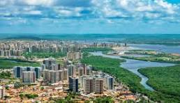

Sergipe é o menor estado do Brasil, localizado na região Nordeste, mas mesmo assim cheio de charme e belezas. Sua capital, Aracaju, é conhecida por suas praias tranquilas, como Atalaia, que é bastante popular entre moradores e turistas. Sergipe tem uma cultura rica, com festas tradicionais, música e culinária deliciosa, incluindo pratos como caranguejo, moqueca e tapioca. O estado também possui áreas de natureza preservada, como o Parque Nacional da Serra de Itabaiana, que oferece trilhas e vistas incríveis. Além disso, Sergipe tem um centro histórico com igrejas e construções coloniais que refletem sua história. A economia do estado é baseada na agricultura, na indústria e no turismo, que cresce bastante devido às suas praias e belezas naturais. É um lugar acolhedor, cheio de cultura e com uma vibe bem tranquila. Se quiser mais detalhes, estou aqui para ajudar!
